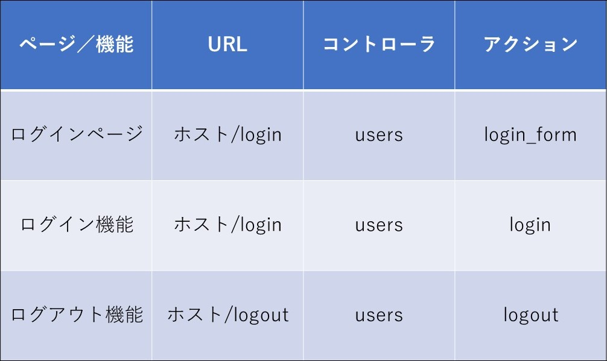

ログイン・ログアウト機能
制作イメージ
ログイン・ログアウト機能を作成してください。
複雑で開発ボリュームも多いですが、焦らず順序立てて進めていきましょう。
キャプチャ作成中
【カラム追加】
◆Userテーブルに下記カラムを追加してください。
・マイグレーションファイル名：add_password_to_users
・カラム名：password
・データ型：string
◆Userモデルにバリデーションを追加し、下記に該当する場合は投稿内容をデータベースに保存せずにエラーメッセージを表示するようにしてください。
・パスワード：空の投稿の場合
【ログイン／ログアウト制御】
◆ログイン前とログイン後で、画面上の右上のメニューブロックが下記の通り動的に変更されるようにしてください。
・ログイン前 表示
- TweetApp（リンク先："/"）
- TweetAppとは
- 新規登録
- ログイン
・ログイン後 表示
- TweetApp（リンク先："/posts/index"）
- ログインユーザー名（リンク先："/users/:id"）
- 投稿一覧
- 新規投稿
- ユーザー一覧
- ログアウト
◆ログイン状態によって、下記該当ページへは、URLを直接入力してもアクセスできないようにしてください。
・ログインユーザー アクセス制限ページ
- TOPページ（home#top）
- 新規ユーザー登録ページ（users#new）
- 新規ユーザー登録機能（users#create）
- ログインページ（users#login_form）
- ログイン機能（users#login）
・ログアウト状態 アクセス制限ページ
- 投稿ページ及び機能全て
- ユーザー一覧ページ（users#index）
- ユーザー詳細ページ（users#show）
- ユーザー編集ページ（users#edit）
- ユーザー編集機能（users#update）
◆ログイン時にユーザーが存在しない場合は、下記エラーメッセージを自作して表示してください。
・メールアドレスまたはパスワードが間違っています
◆ログイン後は、ログインユーザーの情報をsession（セッション）を使用して保持し続けるようにしてください。
【新規ユーザー登録編集】
◆/users/new.html.erbにパスワード用のフォームを作成し、新規ユーザー登録時にパスワードがデータベースに保存されるようにしてください。
◆新規ユーザー登録が成功した直後はログイン状態となるようにしてください。
【ユーザー編集ページ制御】
◆ログインユーザーと異なるユーザーの編集ページへアクセスできないよう、「編集」のリンクを非表示にしてください。
◆ログインユーザーと異なるユーザーの編集ページへは、URLを直接入力してもアクセスできないようにしてください。
【その他】
◆サクセスメッセージは、下記の通りにしてください。
・ログイン成功時：ログインしました
・ログアウト時：ログアウトしました
・ログアウト状態での制限ページアクセス時：ログインが必要です
・ログインユーザーの制限ページアクセス時：すでにログインしています
・他ユーザー編集ページアクセス時：権限がありません
◆HTMLは下記ファイルをベースとして使用してください。
◆URL、コントローラ名、アクション名は下記のルーティング表に従って作成してください。
・HTMLダウンロード
ルーティング表

※下記の順序で機能を作成すると整理しやすいので、参考にしてみてください。
①ログイン機能
②ログアウト機能
③ログインユーザー名表示
④ログイン状態によってのアクセス制限
⑤ログインユーザー情報のみ編集可能とする